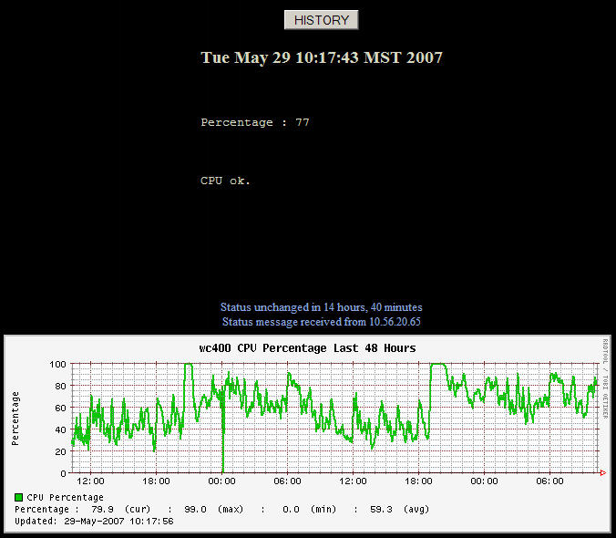

Custom Hobbit Monitoring Using SNMP
Hobbit
Working as a Unix Engineer for a large manufacturing corporation puts me in contact with many types of systems and services, and one of the tools for system monitoring I employ is the open source application Hobbit. Monitoring applications make excellent early-warning systems, and can help prevent large-scale network and server problems. In many cases, they can warn you when things are about to go wrong, which is much better than getting panicked phone calls in the middle of the night. Hobbit is a great example of such a watchdog. Hobbit is a compiled binary replacement for Big Brother, and it offers more functionality and improved speed over the original. While Hobbit comes with many of the most common network and system tests right out of the box, it is also easy to extend it to monitor things that are specific to your environment.
I will not describe the Hobbit installation procedure here, as this is well documented at the Hobbit home page, instead I will be describing one of the many custom extensions I am using in production.
Extensions
Hobbit extensions can range from simple shell scripts to full-blown compiled programs and anything in between. As long as you have access to the Hobbit client you can create any test you need and have the results integrated into the Hobbit web page and alert system. My scripting language of choice for writing Hobbit extensions is Perl. There is a large repository of Hobbit/Big Brother extensions that have already been written and contributed back to the community at http://www.deadcat.net.
A Simple SNMP Monitor
Using a simple snmp command and some Perl code we can test many services and processes that are not natively available in Hobbit. The first step is to determine the OID and password for the service you wish to check. In this article I will describe how I used this method to get the cpu utilization from an iSeries server, which is functionality that was not included in Hobbit out of the box. The same principles apply to nearly anything that can be grabbed via SNMP. My Hobbit server runs on Solaris, but the commands are the same for linux. The command to get the cpu utilization from an iseries box from the Solaris command line is "snmpget -v1 -c password servername 1.3.6.1.4.1.2.6.4.5.1.0". With this command in hand, we can wrap it in a script that will report the results to the hobbit server.
The Script
#!/usr/bin/perl -w
use strict;
# $test will be the name shown in the Hobbit web gui,
# it should be as short as possible
my $test = '400cpu';
# $bbprog is simply the name of the script
my $bbprog = '400cpu.pl';
my ($color, $line, $machine, $warn, $end, $date, $currently);
my $server='servername';
# Issue the snmp command we discussed earlier and store the
# results in $results
my $results = `/usr/local/bin/snmpget -v1 -c public wc400 1.3.6.1.4.1.2.6.4.5.1.0`;
# Split the results into an array, breaking up by spaces
my @results = split / /, $results;
# Grab just the piece we're looking for from the array, and store in $value
my $value = $results[3];
chomp($value);
# If the value comes in at 3000, that means 30 percent, so do some quick
# math on $value
$value = $value/100;
$value = int($value);
# Initially set the test color to "green", we'll turn red if needed to alert
$color = 'green';
# Set some variables to present to the Hobbit server, the first in colon format
my $percent = "\n\nPercentage : $value\n\n";
$currently = "$percent\n\nCPU ok.\n\n\n\n";
# Determine if cpu utilization is too high, if so, turn red
if ( $value > 80 ) {
$color = 'red';
$currently = "$percent\n\nCPU Utiliaztion is high.\n\n";
}
# Prepare line for Hobbit server in correct format
$machine = "$server,amkor,com";
$date = `date`;
chomp($date);
$line = "status $machine.$test $color $date $currently";
system("/usr/local/hobbit/server/bin/bb hobbit_servername \"$line\"";
Enabling the script in Hobbit
Now that we have our script ready, it's time to configure the Hobbit client to run it once every five minutes. Open the file clientlaunch.cfg in the etc directory of your Hobbit home directory and add this entry:
[400cpu.pl]
ENVFILE $HOBBITCLIENTHOME/etc/hobbitclient.cfg
CMD $HOBBITCLIENTHOME/ext/400cpu.pl
LOGFILE $HOBBITCLIENTHOME/logs/400cpu.pl
INTERVAL 5m
Now you can restart your Hobbit client, wait 10 or 15 minutes for data to
be collected, then check your Hobbit gui for output similiar to this:

In Conclusion
In this brief article, we've managed to create a useful Hobbit test, and have it integrated into the Hobbit gui. Simple variations of this technique can be used to monitor almost any metric that can be gotten to via snmp.
Talkback: Discuss this article with The Answer Gang
Martin Colello is a unix engineer working for a semiconductor assembly and test company called Amkor Technology. While he is primarily working on Solaris administration, he uses Linux and other OSS software where appropriate to get special projects completed quickly. Most often this is in the area of network, server, and application monitoring using tools such as Hobbit, Cricket, Cacti and Perl scripting.